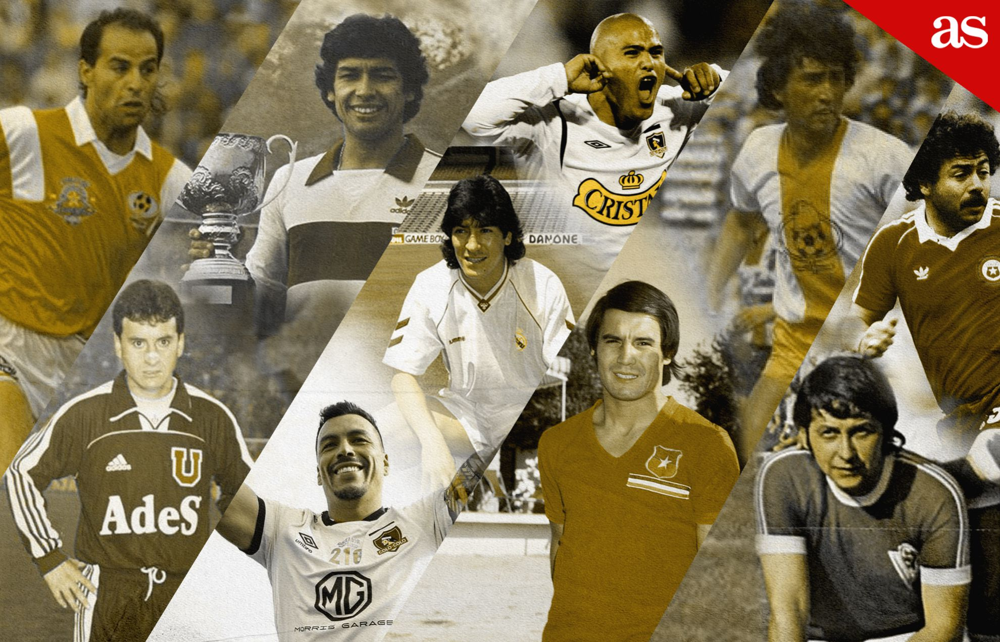
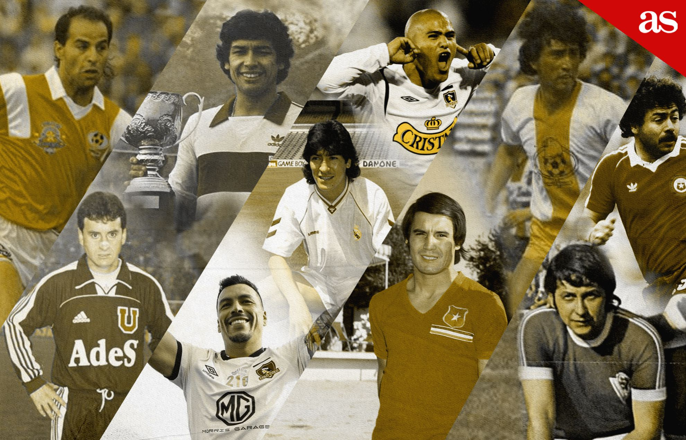

Liga Chilena
La Primera División de Chile es la principal categoría del fútbol profesional en Chile. Es organizado por la Asociación Nacional de Fútbol Profesional de Chile, perteneciente a la Federación de Fútbol de Chile. Para el año 2024 tendrá el nombre Campeonato Nacional Banco Itaú, por motivos de patrocinio.1
Fue fundada el 31 de mayo de 1933 por clubes disidentes de la Asociación de Football de Santiago, que organizaba el fútbol de forma aficionada en la ciudad de Santiago desde 1903, siendo el tercer torneo profesional más antiguo de América Latina.n 1 Desde su fundación se han disputado un total de 107 títulos en 92 temporadas oficiales de campeonato.
A lo largo de su historia, el campeonato de la Primera División de Chile ha tenido diferentes formatos, estructuras y cantidad de participantes. La temporada 2024 es disputada a través de un solo torneo a lo largo de su año calendario. Participan en dicha competencia un total de 16 equipos y la cual funciona con un sistema de ascensos y descensos con la categoría inmediatamente inferior, la Primera B de Chile (categoría con la cual comparte en la disputa de la Copa Chile). El campeón del año 2023 es Huachipato que consiguió el tercer título en su historia.2
Un total de 53 clubes han disputado al menos una temporada de Primera División, y 16 han obtenido el título por lo menos una vez. Su primer campeón fue Magallanes. Colo-Colo ha sido el único en participar en todas las temporadas disputadas, así como el con más títulos obtenidos con 33, seguido por Universidad de Chile con 18, Universidad Católica con 16 y Cobreloa con 8, siendo este último el cuadro de fuera de la capital con más títulos. Por otro lado, los cuatro clubes más ganadores son considerados como los «clubes clásicos del fútbol chileno» por la FIFA.3
Ha sido considerada por la Federación Internacional de Historia y Estadística de Fútbol (IFFHS) como una de las ligas más fuertes del mundo en 1992, 1994 y 1999, cuando obtuvo el mejor puesto de su historia: 9.º, así como el 10.º en 2011 y 2012. Actualmente está ubicada en el puesto 32 lo que la convierte en el cuarto peor torneo de fútbol de Sudamérica.4
Con un total de 33 Colo-Colo es el equipo con más títulos de Primera División en Chile, le siguen Universidad de Chile con 18, Universidad Católica con 16, Cobreloa con 8 y Unión Española con 7. Universidad Católica y Colo-Colo son los únicos cuadros que se han proclamado "tetracampeón" de Primera División. El primero en los años 2018, 2019, 2020 y 2021 y el segundo, en formato de torneo corto con play-off (Apertura 2006, Clausura 2006, Apertura 2007 y Clausura 2007). Magallanes, Colo-Colo y Universidad de Chile son los únicos cuadros que se han convertido en tricampeón de Primera División. Los "Carabeleros" lo lograron en las temporadas de 1933, 1934 y 1935; los "Albos", en los torneos de 1989, 1990 y 1991 y los "Azules", en los torneos de Apertura 2011, Clausura 2011 y Apertura 2012.
 
